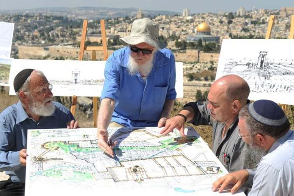

Галилея. Древняя синагога Арбель2015 · Артефакты, Путешествия
Галилея. Древняя синагога Арбель2015 · Артефакты, Путешествия Возрождение государства Израиль и древние мозаики синагог2016 · Израиль и Церковь, Артефакты
Возрождение государства Израиль и древние мозаики синагог2016 · Израиль и Церковь, Артефакты Начало СИОНИСТСКОГО ИСКУССТВА. Адес синагога2014 · Артефакты, Библия и художник
Начало СИОНИСТСКОГО ИСКУССТВА. Адес синагога2014 · Артефакты, Библия и художник Начало СИОНИСТСКОГО ИСКУССТВА. Часть II2014 · Артефакты
Начало СИОНИСТСКОГО ИСКУССТВА. Часть II2014 · Артефакты Начало СИОНИСТСКОГО ИСКУССТВА. Часть III2014 · Артефакты, Библия и художник
Начало СИОНИСТСКОГО ИСКУССТВА. Часть III2014 · Артефакты, Библия и художник
- Начало СИОНИСТСКОГО ИСКУССТВА. Адес синагога2014 · Артефакты, Библия и художник
- Начало СИОНИСТСКОГО ИСКУССТВА. Часть II2014 · Артефакты
- Начало СИОНИСТСКОГО ИСКУССТВА. Часть III2014 · Артефакты, Библия и художник
 БЕН УРИ. 100 лет творческих поисков2014 · Артефакты, Библия и художник
БЕН УРИ. 100 лет творческих поисков2014 · Артефакты, Библия и художник- Возрождение государства Израиль и древние мозаики синагог2016 · Израиль и Церковь, Артефакты

- Скажи мне о твоих сандалиях, и скажу тебе, кто ты. I2015 · Артефакты

Скажи мне о твоих сандалиях и скажу тебе, кто ты. II2015 · Артефакты ПЕСАХ (Пасха) в израильской РЕКЛАМЕ2014 · Праздники в Библии, Артефакты
ПЕСАХ (Пасха) в израильской РЕКЛАМЕ2014 · Праздники в Библии, Артефакты- Возрождение государства Израиль и древние мозаики синагог2016 · Израиль и Церковь, Артефакты
 ПАСХАЛЬНАЯ АГАДА. Историческая справка2015 · Праздники в Библии, Артефакты, Библия и художник
ПАСХАЛЬНАЯ АГАДА. Историческая справка2015 · Праздники в Библии, Артефакты, Библия и художник При Исходе евреи взяли Египет с собой?2015 · Праздники в Библии, Артефакты
При Исходе евреи взяли Египет с собой?2015 · Праздники в Библии, Артефакты- ПЕСАХ (Пасха) в израильской РЕКЛАМЕ2014 · Праздники в Библии, Артефакты
 Куща ДАНИЭЛЯ ЛИБЕСКИНДА. Праздник СУККОТ2015 · Арт-мидраш, Праздники в Библии, Артефакты, Путешествия
Куща ДАНИЭЛЯ ЛИБЕСКИНДА. Праздник СУККОТ2015 · Арт-мидраш, Праздники в Библии, Артефакты, Путешествия
- Галилея. Древняя синагога Арбель2015 · Артефакты, Путешествия
 СЛЕДЫ ЦАРЯ ДАВИДА в долине Аэла2014 · Артефакты, Путешествия
СЛЕДЫ ЦАРЯ ДАВИДА в долине Аэла2014 · Артефакты, Путешествия Kinderfresser - ПОЖИРАТЕЛЬ ДЕТЕЙ2015 · Израиль и Церковь, Артефакты, Путешествия
Kinderfresser - ПОЖИРАТЕЛЬ ДЕТЕЙ2015 · Израиль и Церковь, Артефакты, Путешествия- Куща ДАНИЭЛЯ ЛИБЕСКИНДА. Праздник СУККОТ2015 · Арт-мидраш, Праздники в Библии, Артефакты, Путешествия